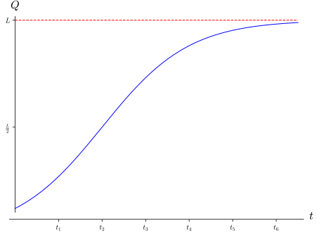

Example 2.5.1. Logistic growth.
A logistic function is often used to model a quantity \(Q=f(t)\) whose growth is prevented from being unlimited by some external factors. These functions are used, for example, to model the growth of a population, or the growth of sales of a product. Below you find the graph of this type of function.

-
What does the apparent horizontal asymptote of \(f\) tell us about the quantity \(Q\) as a function of time?
-
Give a detailed qualitative description of the rate of change of \(Q\) with respect to \(t\) over the interval \([0,t_2]\text{.}\)
-
Give a detailed qualitative description of the rate of change of \(Q\) with respect to \(t\) over the interval \([t_2,t_6]\text{.}\) Explain why this description makes sense in light of the long term growth of \(Q\text{.}\)
Solution.
-
The function \(Q(t)\) is increasing on its entire domain, with a horizontal asymptote of \(y=L\text{,}\) meaning that \(\lim\limits_{t\to \infty}Q(t)=L\text{.}\) This means the quantity \(Q\) is always growing, approaches a ceiling value of \(L\text{,}\) but never reaches that value. (The value \(L\) in a logistic function like this is called the carrying capacity of \(Q\) in modeling contexts.)
-
As always, the rate of change of \(Q\) with respect to \(t\) is the derivative function \(\frac{dQ}{dt}=Q'(t)\text{.}\) We see that for \(t\in [0,t_2]\) the slope of the tangent line to the graph of \(Q\) at \(t\) is positive, and gets more positive as \(t\) increases. This means that \(Q'(t)\) is positive and increasing. In terms of \(Q\text{,}\) this means that \(Q\) is increasing at an increasing rate over this interval.
-
Similar reasoning shows that for \(t\in [t_2, t_6]\) the rate of change \(Q'(t)\) is positive but getting less positive (i.e., \(Q'\) is decreasing). In terms of \(Q\text{,}\) this means that \(Q\) is increasing at a decreasing rate over this interval. This makes sense in terms of the limiting value \(L\) of \(Q\text{:}\) since \(Q\) cannot exceed this value, its rate of increase must level off as it gets closer in value to \(L\text{.}\)
-
It appears that \(Q(t_2)=\frac{L}{2}\text{.}\) As it turns out, this is a special property that holds for all logistic functions. In more detail, our previous analysis identifies \(t_2\) as the unique inflection point of the function \(Q(t)\text{.}\) (See Definition 2.5.3.) In the modeling context \(t_2\) is sometimes called a point of diminishing returns, since the rate of increase of \(Q\) levels off after that point. It turns out that for any logistic function the value of the function at this point in time is always equal to \(L/2\text{,}\) half of the carrying capacity \(L\text{.}\)This property of logistic functions is useful for predicting the ceiling value of a quantity you are studying. Imagine you take daily measurements of a growing population of bacteria that you believe is accurately modeled by a logistic function. From that data you can compute the average rate of change over each day, which you interpret as an estimate of the instantaneous rate of change of growth each day. On the first day that you notice your rate of growth estimate has decreased from the previous day, you conclude that you have reached (approximately) the point of diminishing returns. If the population on that day is \(Q_0\text{,}\) you estimate that the ceiling of the population is \(2Q_0\text{.}\)